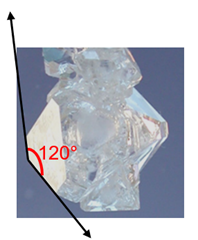

Grow Your Own Alum Crystal

You can find Alum in the spice aisle. 
- 1/2 cup hot tap water
- 2-1/2 tbl Alum
Why study structures?
Recall from module 1, the main principle of MSE: structure affects properties and processing controls structure in understandable and predictable ways. Therefore, if we want to tailor properties of materials by altering structure, we need to understand what counts as "structure" and in what way do different types of structure affect properties. There are three levels of structure that we will consider in this course: atomic structure (e.g. bonding), atomic arrangement of atoms (e.g. crystal structures), and microscale structures (e.g. grains and grain boundaries). Atomic structure was already covered in module 2.
Video Lesson
Cubic Crystal System
Atomic Arrangement in Crystalline Solids
Atoms in crystalline solids are arranged in an ordered periodic structure. Consider the Alum crystal shown to the left. Notice the large flat region (facet) with one of its 120 degree angles indicated. The edges of this facet may change in length but they always meet at specific angles dependent on the type of crystal. This implies that there must be some underlying order in crystalline materials.
Not all materials are crystalline. Non-crystalline materials are referred to as amorphous. Materials can also have both crystalline and amorphous regions and are referred to as semi-crystalline. We will discuss these materials more in the module on polymers.
There are a limited number of ways atoms can be arranged with an ordered periodic structure to fill space. This is more easily demonstrated in 2-dimensions. Compare filling space by arranging regular pentagons versus regular hexagons. The hexagons (as well as parallelograms, squares, rectangles, and triangles) can be arranged to completely fill space without gaps, but the pentagons as shown below leave gaps.


If we extend this concept to 3D, we surprisingly find that only 7 unique geometries fill space in 3 dimensions. These are referred to as crystal systems. Some systems can have further subclassifications resulting in the 14 Bravais lattices. All crystalline materials (over 1 million structures) belong to one of these 14 basic lattices.
The 7 Crystal Systems & 14 Bravais Lattices
In this course, we will focus on the cubic crystal system and briefly introduce the hexagonal crystal system but for completeness we present all 14 lattices and 7 systems below. The crystal systems are: triclinic, monoclinic, orthorhombic, tetragonal, hexagonal, rhombohedral, and cubic.


The 14 Bravais Lattices and 7 Crystal Systems (hover over images to enlarge)